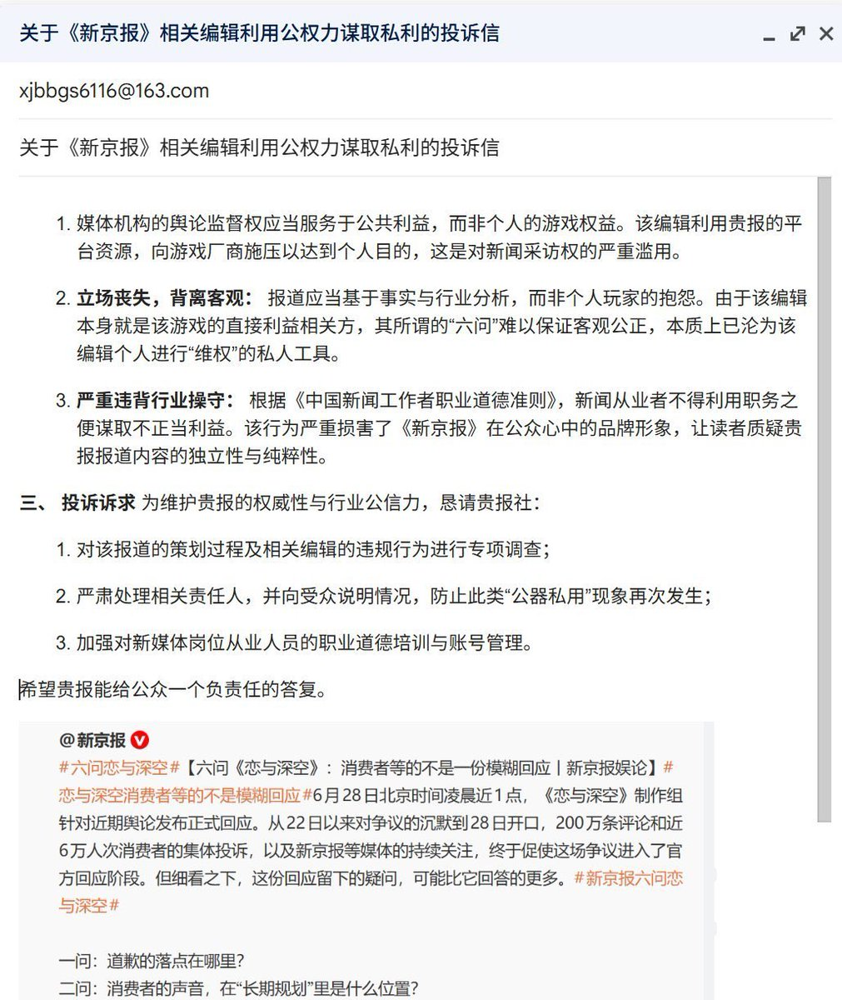

《新京报》某编辑利用职务之便，将对乙游《恋与深空》的个人抱怨写成小作文发表在微博上……（关于此乙游近期的节奏请自行搜索喵）
如果是一个纯粹把社媒当成朋友圈的小账号，環状線不认为抱怨游戏厂商有什么问题，个人有情绪当然很正常。但是，如果一个账号已经有了一定粉丝基础和扩散能力，比如 新京报，又比如環状線，突然开始把账号为自己的个人恩怨服务，就会显得非常「不专业」。「不专业」是什么？若运营者没有把账号当成一个成熟的公共表达载体来管理，那这就是「不专业」。
当然，環状線并不是说有大量粉丝的账号不能参与到「游戏节奏」之类的争议事件中，而是说这种「参与」的行为需要慎重考虑诸多因素。一个账号越有传播能力，越需要知道自己的表达是否会调动受众、是否会改变舆论压力、是否会把私人矛盾放大成公共事件。如果这些都不考虑，只是借用粉丝基础去处理个人不满，那么其消耗的不只是对方，也是在消耗粉丝对自己账号专业程度的信任。
显然，「新京报」这个账号的受众不只有《恋与深空》玩家，甚至可以说这些玩家在受众的占比或许不超过 1%，其余绝大部分受众比如年轻现充、中年叔叔阿姨，还有老爷爷老奶奶，对《恋与深空》这个东西可能连听都没听说过。想象一下，这些剩余 99% 读者打开微博，看到这个叫「新京报」的报刊发了一条帖子，内容是充斥着大量个人情绪的小作文，批判着一个顶着名字前所未闻的游戏，你说读者是能够和那个编辑共情呢，还是感觉莫名其妙呢，抑或是觉得「这个报纸真*文明用语*」呢？
如果是一个纯粹把社媒当成朋友圈的小账号，環状線不认为抱怨游戏厂商有什么问题，个人有情绪当然很正常。但是，如果一个账号已经有了一定粉丝基础和扩散能力，比如 新京报，又比如環状線，突然开始把账号为自己的个人恩怨服务，就会显得非常「不专业」。「不专业」是什么？若运营者没有把账号当成一个成熟的公共表达载体来管理，那这就是「不专业」。
当然，環状線并不是说有大量粉丝的账号不能参与到「游戏节奏」之类的争议事件中，而是说这种「参与」的行为需要慎重考虑诸多因素。一个账号越有传播能力，越需要知道自己的表达是否会调动受众、是否会改变舆论压力、是否会把私人矛盾放大成公共事件。如果这些都不考虑，只是借用粉丝基础去处理个人不满，那么其消耗的不只是对方，也是在消耗粉丝对自己账号专业程度的信任。
显然，「新京报」这个账号的受众不只有《恋与深空》玩家，甚至可以说这些玩家在受众的占比或许不超过 1%，其余绝大部分受众比如年轻现充、中年叔叔阿姨，还有老爷爷老奶奶，对《恋与深空》这个东西可能连听都没听说过。想象一下，这些剩余 99% 读者打开微博，看到这个叫「新京报」的报刊发了一条帖子，内容是充斥着大量个人情绪的小作文，批判着一个顶着名字前所未闻的游戏，你说读者是能够和那个编辑共情呢，还是感觉莫名其妙呢，抑或是觉得「这个报纸真*文明用语*」呢？
